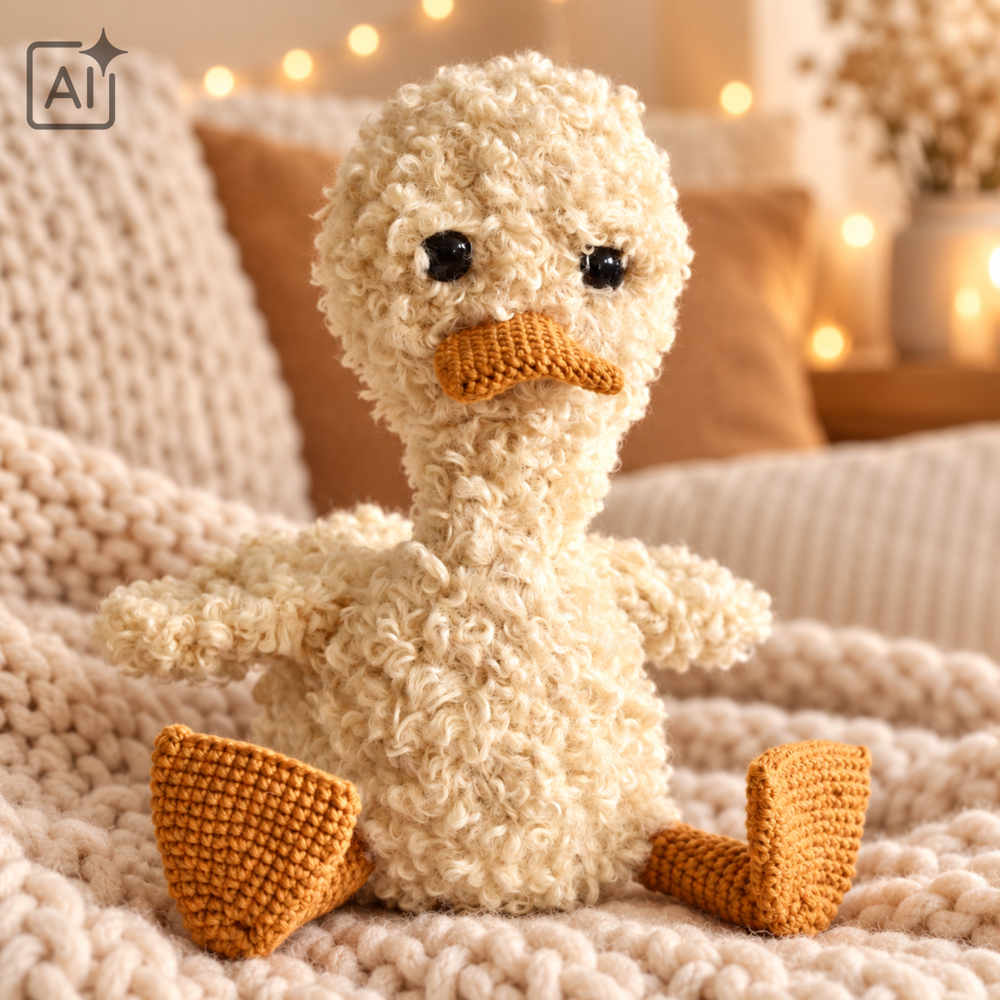
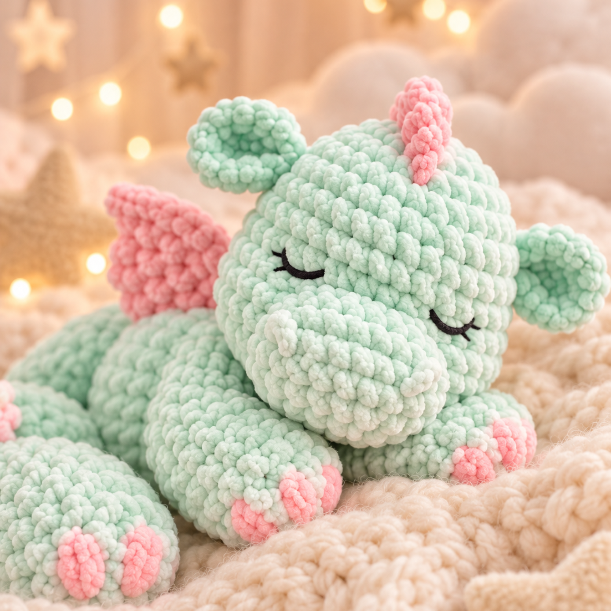
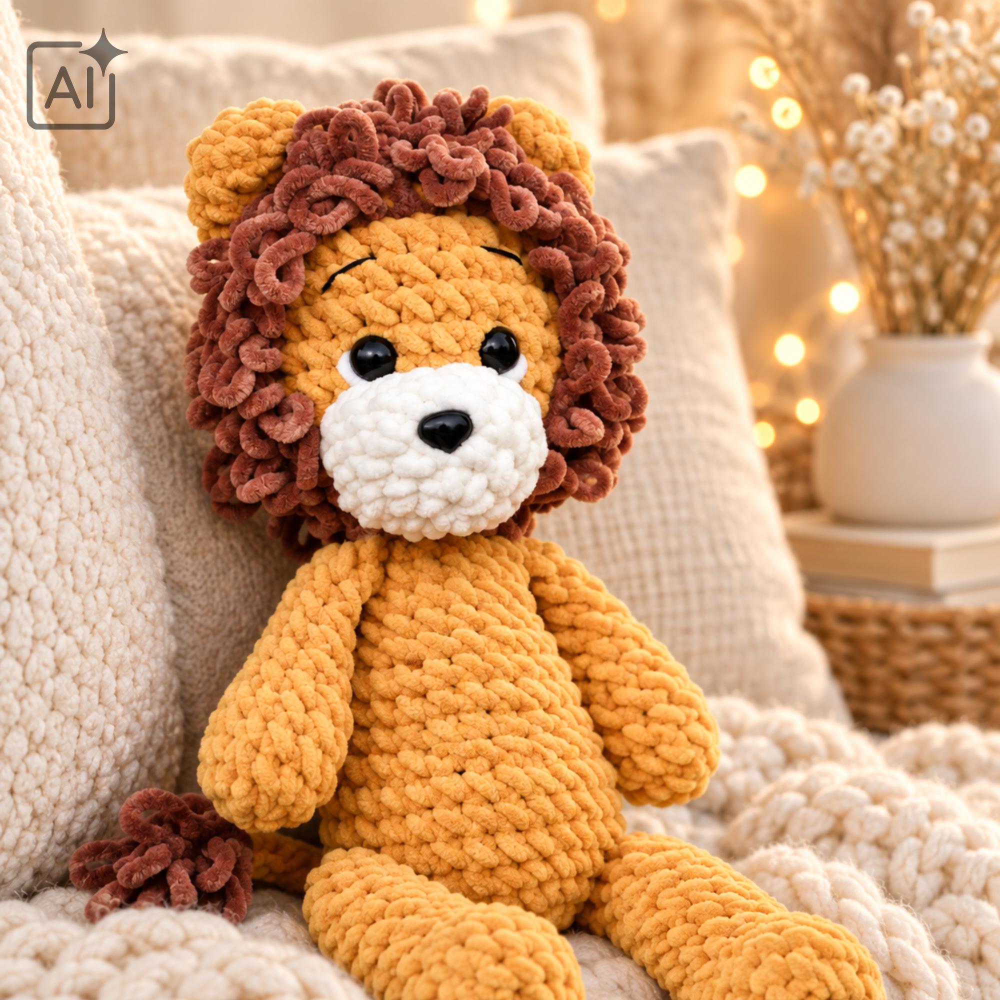
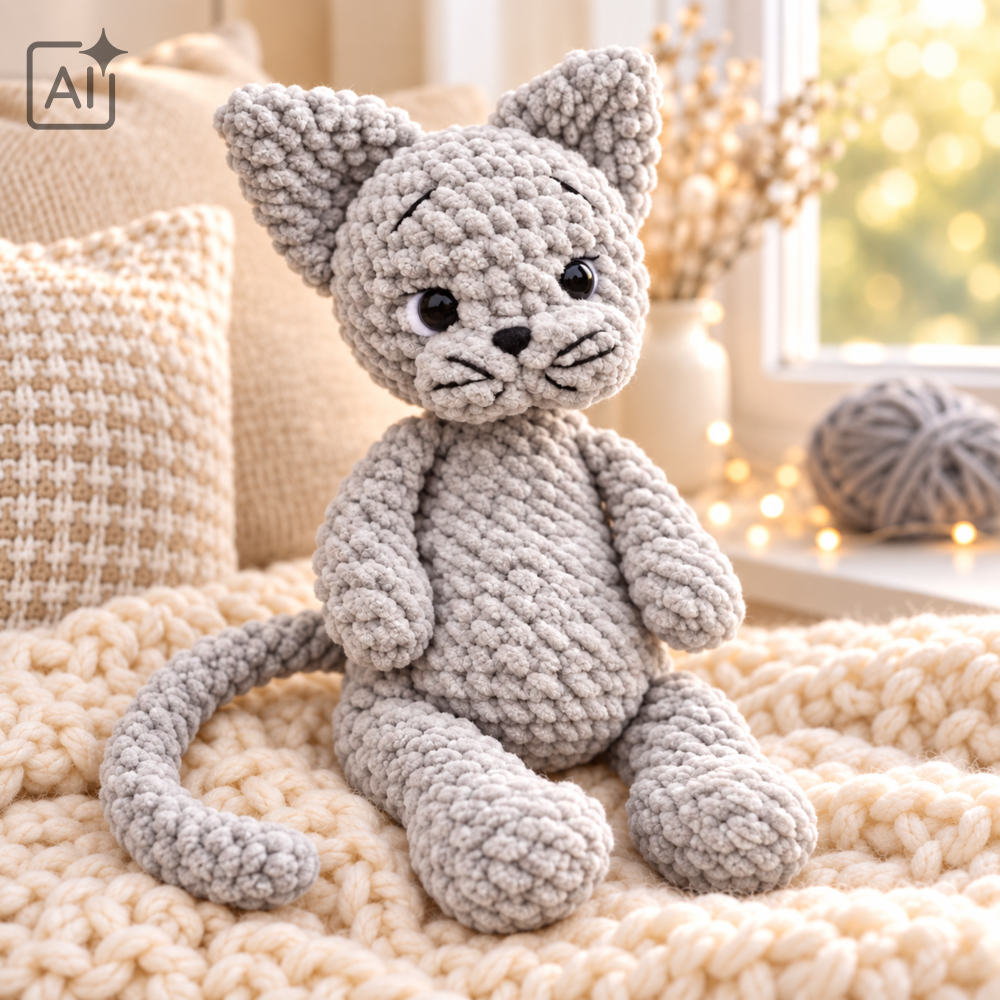
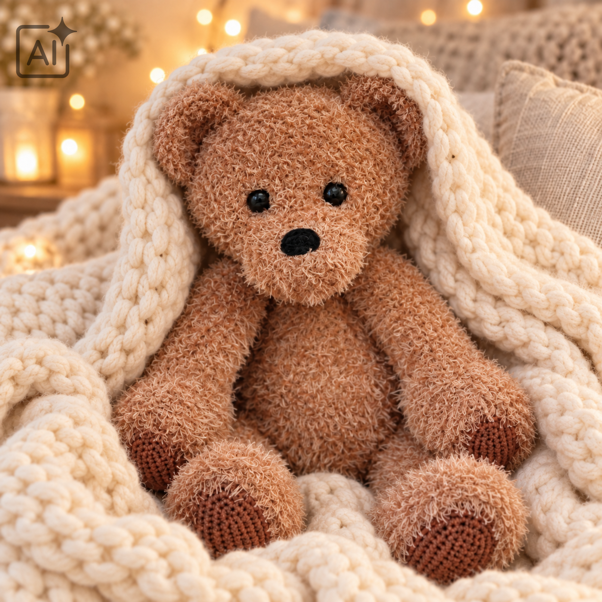
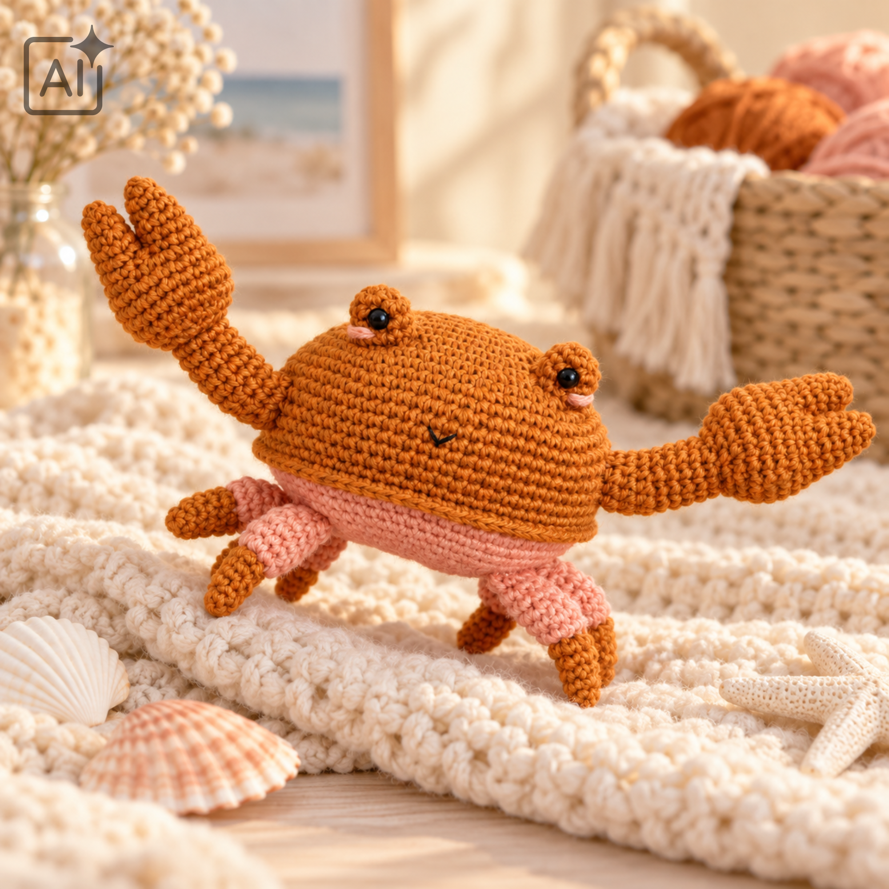

Eendje
Met zijn grote flapvoeten, zachte krullen en heerlijk chagrijnige
snoetje steelt dit eendje meteen de show. Hij kijkt misschien alsof
hij met het verkeerde pootje uit bed is gestapt, maar stiekem is hij
vooral gemaakt om mee te knuffelen. Een grappig haakproject vol
karakter, waarbij het pluizige garen hem extra zacht en eigenwijs
maakt.

Draakje
Dit lieve draakje ziet er misschien magisch uit, maar met een
haaknaald en zacht garen kun je hem helemaal zelf tot leven brengen.
De combinatie van mintgroen met roze details geeft hem een vrolijke en
zachte uitstraling. Met zijn kleine vleugeltjes, ronde buikje en
schattige stekels is hij vooral gemaakt om heel veel mee te knuffelen.
Een gezellig haakproject met een eindresultaat van ongeveer 20
centimeter groot.

Leeuwtje
Met zijn wilde krullen, zachte buik en lieve snoetje is deze leeuw
lang niet zo stoer als hij eruit probeert te zien. Zijn grote bruine
manen maken hem de koning van de knuffels, terwijl zijn lange armen
altijd klaarstaan voor een stevige omhelzing. Een gezellig haakproject
voor iedereen die wel wat extra moed én zachtheid kan gebruiken.

Poes
Met zijn grote oren, lange staart en nieuwsgierige snoetje houdt dit
katje alles goed in de gaten. Hij zit misschien heel onschuldig tussen
de zachte dekens, maar is stiekem altijd klaar voor een nieuw
avontuur. Een heerlijk zacht haakproject vol eigenwijze details,
gemaakt om mee te knuffelen en natuurlijk een klein beetje kattenkwaad
uit te halen.

Beertje
Met zijn lange armen, zachte vacht en lieve snoetje is deze beer
gemaakt voor de allerbeste knuffels. Het pluizige garen geeft hem een
warme, bijna nostalgische uitstraling en maakt ieder beertje nét een
beetje anders. Een heerlijk zacht haakproject dat na de laatste steek
waarschijnlijk nooit meer uit je armen verdwijnt.

Krabje
Met zijn grote scharen, kleine pootjes en vrolijke oogjes komt dit
krabje zijwaarts je haakcollectie binnenwandelen. Hij ziet er
misschien een klein beetje krabbig uit, maar met zijn roze buikje en
grappige glimlach is hij vooral ontzettend lief. Een speels
haakproject vol leuke vormen en details, waarmee je het strandgevoel
gewoon in huis haalt.
